BB 26000
Les Sybics
Les moteurs à courant alternatif sont connus depuis longtemps et appréciés pour leur simplicité et leur rendement. Cependant, l'application
des moteurs électriques aux Chemins de Fer impose une utilisation en vitesse variable. Ils doivent donc être alimentés avec
une fréquence variable. Jusqu'au dernier quart du XXe siècle, l'unique moyen pour y parvenir était le groupe tournant,
composé d'une génératrice et d'un alternateur mécaniques, lourd et peu fiable qui équipait, par exemple,
les CC 14000 à moteurs asynchrones. Faute de mieux, le moteur continu série ou le
moteur direct étaient donc systématiquement utilisés malgré leur talon d'achille : le collecteur.
L'avènement des semi-conducteurs permettait enfin la réalisation d'onduleurs à haute puissance avec, à la clé, la
quète de la machine universelle. La SNCF avait sollicité Alsthom et MTE pour l'étude de concepts asynchrone (BB
10003) et synchrone (BB 10004). L'autopilotage du moteur synchrone (fréquence de l'onduleur imposée
par la vitesse en sortie du moteur lui-même) simplifiait le schéma électrique de cette solution. A l'inverse, l'extinction des thyristors
de la solution asynchrone exigeait des circuits complexes. Aussi, la 10003 connaissait des soucis de fiabilité et le poids supérieur
des équipements asynchrones posait problème pour réaliser une locomotive bicourante. Telles furent les raisons qui poussèrent
la SNCF, contrairement aux compagnies germaniques, à choisir le moteur synchrone autopiloté pour sa nouvelle génération
de TGV Atlantique et à poursuivre les essais sur deux BB 22200, sorties d'usine sous les numéros 20011 et 20012 et équipées
d'une chaîne de traction synchrone qui préfiguraient les futures BB 26000. Leur conception Synchrone-Bicourant donna leur surnom aux 26000 : Les Sybics.
La 26000 fut la concrétisation d'un vieux rêve de la traction ferroviaire. Un couple important à faible régime et la capacité
d'atteindre des vitesses élevées, la machine synchrone peut exploiter toute sa puissance sur toute la gamme des vitesses et rendre
les 26000 universelles. L'ironie du sort voudra que, dès lors que la technique permettait de telles machines, la nouvelle donne économique
décidera de rebrousser chemin vers des parcs spécialisés.
Livrées en 1988, les BB 26001 à 26005 ont subi de longs essais avant d'être suivies par 229 exemplaires mis en service de
1990 à 1998. Les 26000 ont vécu de nombreux déboires de jeunesse mais se sont fiabilisées au fil des ans. Leur polyvalence
les a amenées à chasser les anciennes séries de locomotives tant sur le Fret que des relations à 200 km/h. La régularisation
de la caténaire Midi à Toulouse leur permet de déposséder les CC 6500 de leur dernières
relations prestigieuses. De même, elles roulent à 200 km/h en plaine d'Alsace sur des TER 200, d'Orléans au Croisic avec les
Interloire ou de Paris à Cherbourg. Leurs roulements les emmènent également sur la ligne du Bourbonnais, la ligne de la Bresse, la
transversale sud et de nombreux mouvements Fret du nord au sud du pays.
Afin de proposer une solution asynchrone à son catalogue, Alstom a convenu avec la SNCF de transformer la commande de la dernière
tranche de Sybics en BB 36000 Astride tritension, et équipées de moteurs asynchrones et d'une chaine de traction à thyristors GTO.
Mi-vie : la valse des numéros
Les BB 15000 sont les dernières machines à subir le cycles des "révisions
générales". Désormais, tous les organes des locomotives modernes suivent leur propre cycle de révision. Afin de
réduire au minimum le temps d'immobilisation des machines en atelier, les caisses des BB 26000 sont considérées comme des
organes indépendants. Après révision, le numéro d'une machine suit le bloc central d'appareillage tandis que la caisse change de machine et de numéro.
De nombreuses machines ont été repeintes dans un livrées grise uniforme. La livrée définitive "Carmillon" fut ensuite appliquée par pelliculage, sans être généralisée aux machines déjà révisées.
Réversibilité à 200 km/h
Les BB 26000 exploitées sur les TER 200 dans la plaine d'Alsace ont été modifiées pour la pousse de rames corail à la vitesse, inédite pour ce matériel, de 200 km/h. Un "R" fut apposé à la fin de leur immatriculation. La locomotive est télécommandée, via une connexion multiplexée et un automate, depuis la voiture pilote B5uxh. Afin de limiter les décollement de caténaires, le pantographe AM 90 U utilisé en courant monophasé a été remplacé par un modèle CX, qui équipe d'habitude les plus récentes générations de TGV.
Lors de leur passage en opération mi-vie, les BB 26000R sont repeintes en gris métallisé. Un pelliculage bleu institution est appliqué suivant le même schéma que la livrée Carmillon, bien que le nez reste gris. Un petit logo "Grand-Est" vient timidement habiller le flanc vide de la machine.
Radiations précoces
La BB 26084, victime d'un acte de malveillance, fut détruite dans l'accident de Chasse-sur-Rhône et quitta prématurément la série en 2001. La 26083, victime d'un serrage puis d'un incendie, la suivit en 2012.
Cependant, ce n'est pas moins de 39 machines qui manquent déjà à l'appel au printemps 2017. Malgré leurs qualités, ces machines souffrent d'importants problèmes de corrosion et, surtout, de leur grand nombre face à la chute de trafic Fret et de la retraite déjà annoncée des Corail. L'amortissement a commencé par les 26022 et 26023 fin 2014 pour s'accélérer les deux années suivantes. Fret n'a révisé qu'une machine arrivée à chute de potentiel sur deux.
Quelques données techniques
Constructeur : GEC Alsthom - MTE
Tension d'alimentation : continu 1,5 kV et monophasé 25 kV, 50 Hz
Chaîne de traction : Hacheur/Pont redresseur, onduleur synchrone
Motorisation : 1 moteur par bogie
Puissance totale : 5600 kW
Longueur : 17,710 m
Masse : 90t
Pantographes : 1 AL, 1 AM 90 U
1 AL, 1 CX (machines Rever 200)
Dispositions particulières :
Troisième phare de la 26188 à la 26234.
22 machines sont équipées du Memor II leur permettant de rouler au Luxembourg. Parmi elles, les 14 machines TER Alsace
sont équipées en multiplexage pour pousser en réversibilité à 200 km/h les rames Corail TER200 Alsace.
Machines remarquables de la série
La 26070 a tourné dans une publicité pour le TER Alsace. Elle reçut à cette occasion une livrée spécifique. Depuis son opération caisse, elle est en livrée Carmillon.
La 26008 fut la première BB 26000 portant la livrée "En Voyage". Elle est désormais grise.
Suite au problème des droits d'image de la livrée "En Voyage", la 26046 fit l'objet d'essais d'une nouvelle livrée
"Carmillon". La livrée est à présent appliquée au gré des opérations caisse.
Pour plus d'info :
La fiche BB 26000 sur Wikipedia
Fiche technique des BB 26000 de Florent Brisou
L'inventaire des BB 26000 sur Trains du Sud-Ouest
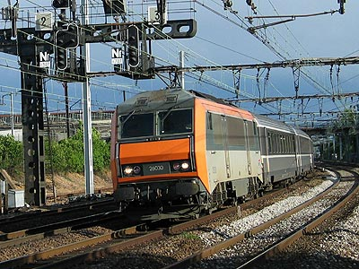
La BB 26030 passe à Choisy le roi (02/05/2003)
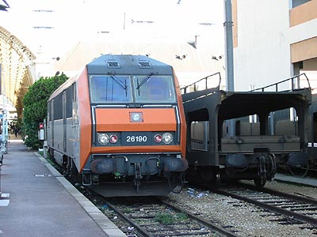
La BB 26190 fait une pause à Nice Ville (17/11/2002)
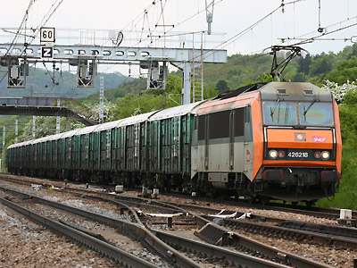
La BB 26218 tire un "Baygon Vert" (Malain, 14/05/2010)
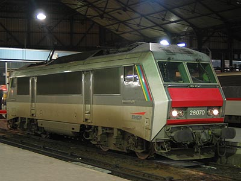
La BB 26070 en livrée TER Alsace à Paris St Lazare (31/01/2003)
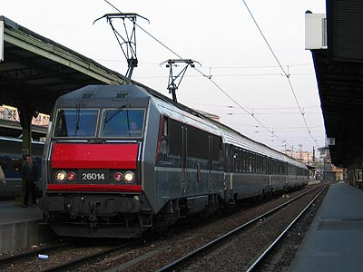
La BB 26014 à Paris Gare de Lyon (14/05/2004)
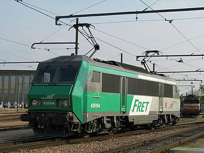
La BB 26184, livrée Fret, à Villeneuve dépôt (11/04/2003)
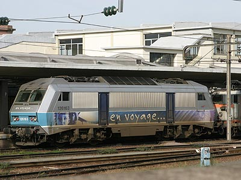
La BB 26163 à Mulhouse (23/10/2004)
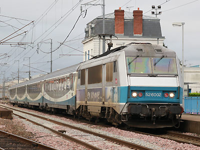
La BB 26002 à Ancenis avec un Interloire (30/03/2015)
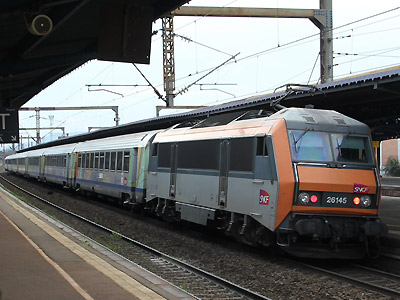
La BB 26145R en pousse d'un TER 200 Alsace (Colmar, 17/08/2016)
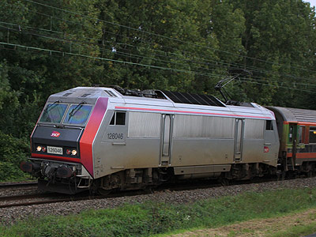
La BB 26046 en Sologne revêt la livrée expérimentale Carmillon (20/09/2011)
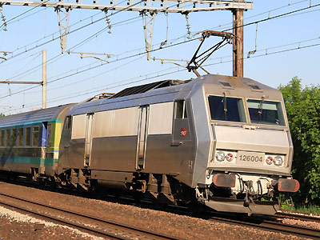
La BB 26004 reste en livrée fantôme inachevée (13/05/2012)